地政学
アレッポはシリア北部でトルコ国境、ユーフラテス流域、地中海岸を結ぶ内陸の要衝です。国家、外部勢力、避難民の移動が生活を変え、道路、検問、復旧の順序まで政治を帯びます。城塞の眺望も現在の緊張を映します。

🇸🇾 シリア / 西アジア / World City Atlas
城塞、スーク、隊商交易、繊維産業、宗教地区、戦争被害と再建の日常が重なるシリア北部の古都。地中海とメソポタミアの間で、記憶と生活を読み直す都市です。
都市の骨格
アレッポは地中海岸、アナトリア、ユーフラテス流域を結ぶ内陸の結節点として栄えました。現在の都市を読むには、城塞とスークの遺産だけでなく、破壊後の住宅、工房、学校、市場の再開を同時に見る必要があります。
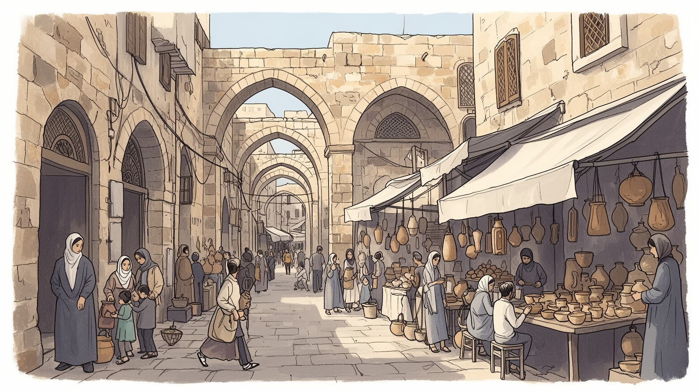
アレッポはシリア北部でトルコ国境、ユーフラテス流域、地中海岸を結ぶ内陸の要衝です。国家、外部勢力、避難民の移動が生活を変え、道路、検問、復旧の順序まで政治を帯びます。城塞の眺望も現在の緊張を映します。
古くから繊維、食品、石けん、金属加工、卸売が強く、工房と市場が都市の仕事を作りました。戦争で工場と商店は損害を受けましたが、修理、運送、建設、家族経営の再開が暮らしを支えます。復興の速度には差も残ります。
スンニ派の生活圏を中心に、アルメニア人、キリスト教徒、クルド人、アラブ人の記憶が地区ごとに重なります。モスク、教会、墓地、祭礼、料理が、破壊を越えて都市の輪郭を保ちます。信仰は近所の支援にもつながります。
城塞、旧市街、スーク、石けん、料理は強い魅力を持ちますが、住民には住宅修復、電力、水、雇用、避難からの帰還、家族の喪失が日々の課題です。観光は記憶を消費せず、暮らしの再建に敬意を払う必要があります。
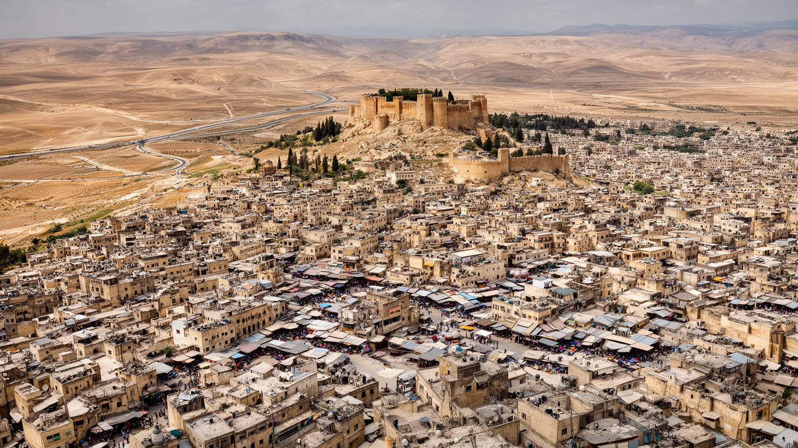
アレッポは海港都市ではありませんが、地中海岸、アナトリア、メソポタミア、シリア砂漠を結ぶ内陸交易の交差点として長く機能してきました。海へ出る道、北へ向かう道、東のユーフラテス方面へ伸びる道が集まり、隊商、卸売、工房、宿、宗教施設が都市の密度を作りました。城塞は軍事的な象徴であると同時に、周囲の平地と市場を見渡す地形の中心です。旧市街の迷路のような通路は偶然ではなく、日差し、風、商売、治安、荷の運搬を調整する都市技術でもあります。近代以降は鉄道、幹線道路、国境管理が交易の形を変え、トルコ国境との距離は経済にも政治にも大きな意味を持ちました。戦争はこの接続を断ち、道路や市場の安全を生活の前提から不安定な条件へ変えました。アレッポを読むには、観光地としての旧市街だけでなく、どの道が開き、どの道が閉じ、どの地区へ物資と人が届くのかを見る必要があります。農村から入る小麦、オリーブ、家畜、周辺工業地の部品、国境を越える親族の移動も、都市の血流です。物流が滞ればパンの価格、燃料、病院の備品、学校の再開まで揺らぎます。周辺の村や国境の町との関係を外すと、中心部の市場も城塞も孤立して見えてしまいます。市場の朝の声や焼くパンの匂い、道端の小売や荷車の音も、復旧の順序と生活の可能性を示す大切な手がかりです。
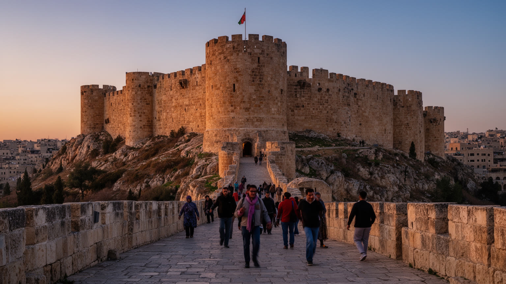
アレッポ城塞は、都市を代表する景観であるだけでなく、支配、包囲、商業、宗教、観光、戦争被害の記憶が集まる場所です。丘の上に立つ城塞は旧市街を見下ろし、周囲の市場、モスク、浴場、住宅、門、広場と一体で都市の中心を形作ってきました。中世の防御施設としての存在感は強いものの、城塞の意味は軍事だけではありません。祝祭、学校遠足、家族の散歩、広場でのサッカー、考古学調査、文化財修復の対象として、住民が自分の都市を思い出す装置でもあります。戦争の時期には周辺が前線や砲撃の影響を受け、城塞の眺望は美しい全景ではなく、破壊された街区と避難した暮らしを含む視界になりました。修復が進むほど、文化財を戻すことと生活を戻すことの順序が問われます。石壁を直しても、周囲の住民、職人、店、学校、交通が戻らなければ、城塞は孤立した記念物になります。広場に人が戻り、子どもが遠足で歩き、高齢者が日陰で休み、店が灯りをともすとき、城塞は再び都市の中心になります。保存の成功は観光客の数だけでなく、住民が誇りと痛みを同じ場所で語れるかでも測られます。修復の現場には石工、考古学者、警備、清掃、案内人も関わり、記憶は仕事としても支えられます。アレッポの城塞を読むことは、強さの象徴を見ることではなく、都市が何を失い、何を残し、どの記憶を公共の場所として共有できるのかを考えることです。
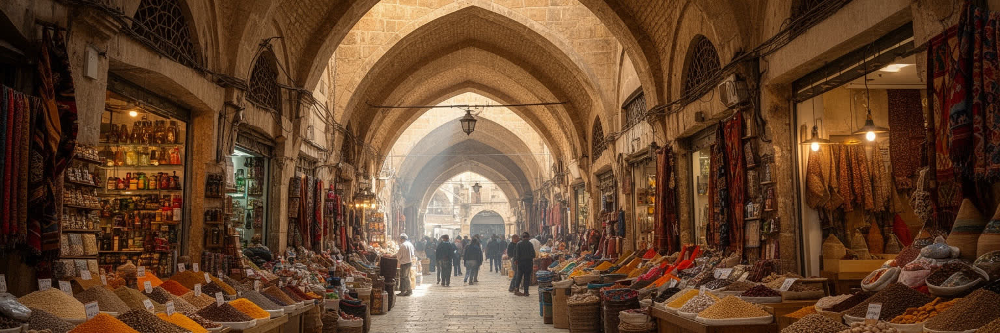
アレッポのスークは、商品を売る通路である前に、都市の記憶を保管する長い屋根の連なりでした。香辛料、布、石けん、金属、食料、衣服、日用品が専門ごとの通りに分かれ、商人、職人、荷運び、買い物客、巡礼者、旅行者が交差しました。世界遺産として語られる価値は、建築の古さだけではありません。店の幅、戸口の高さ、日陰、倉庫、隊商宿、モスクや浴場との近さが、暑く乾いた都市で商売と社交を続ける仕組みを作っていた点にあります。戦争でスークの多くは焼失や崩落を経験し、復元は石材や木材を戻す作業にとどまりません。どの店主が帰れるのか、賃料をどうするのか、観光向けの景観と住民向けの市場をどう両立するのかが問われます。市場は単なる文化財ではなく、信用と人間関係で動く経済です。親から子へ渡る店の場所、隣同士の貸し借り、朝の挨拶、値段交渉、宗教行事前の買い出しが、市場を都市の学校にしていました。復旧後の通路に必要なのは美しい外観だけでなく、こうした細かな約束を再び結ぶ時間です。通路の暗さ、香辛料と石けんの匂い、店先の声も、石造りの意匠と同じくらい重要な遺産です。アレッポのスークを読むと、遺産保護とは過去の形を保存するだけでなく、売る人、買う人、直す人が再び通路を使える条件を作ることだと分かります。屋根の下の生活が戻るほど、都市の記憶も呼吸を取り戻します。
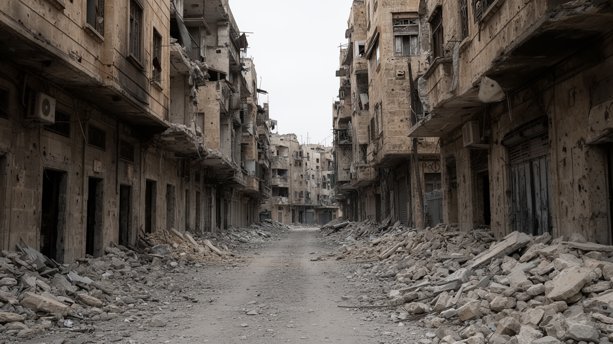
アレッポを現在の都市として読むとき、戦争被害を避けて通ることはできません。旧市街、住宅地、工場、学校、病院、道路、電力、水道は長い戦闘と砲撃で傷つき、多くの住民が避難や移住を余儀なくされました。破壊は建物の倒壊だけではありません。家族の離散、商売の信用、通学の継続、医療へのアクセス、職人の技能継承、近所の助け合いを断ち切ります。同じ都市の中でも被害の濃淡は異なり、早く復旧する地区と、瓦礫や空き家が長く残る地区が生まれます。戦争の記憶は、記念碑より先に、壊れた窓、修理された壁、仮設の配線、遠回りの通学路、帰らない隣人として日常に残ります。外から見ると復興の写真は明るく見えますが、住民にとっては安全、収入、家族、行政手続き、所有権、心の負担が重なります。子どもにとっては、遊び場や学校の記憶が断片化し、大人にとっては仕事の道具や顧客名簿が失われます。医師、教師、職人の移動は、建物以上に回復しにくい損失です。被害を比べるだけでは、そこで生き延びた人の判断や沈黙を理解できません。アレッポの戦争被害を語ることは、悲劇を固定することではなく、都市がどのように壊され、どの順序で戻され、誰がまだ戻れないのかを具体的に見ることです。破壊された都市には、建築の修復だけでは測れない深い時間が今もなお残ります。
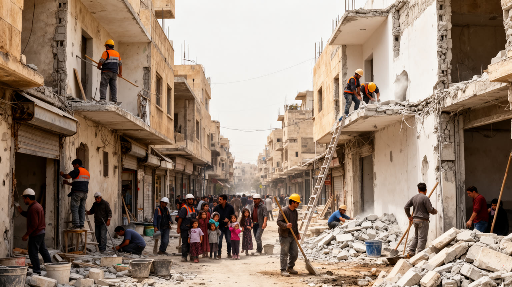
再建のアレッポでは、瓦礫の撤去、屋根の修理、店舗の再開、学校の復旧、電力と水の確保が日常の最前線になります。復興は大きな計画だけで進むのではなく、家族が一部屋を直し、職人が工具を集め、店主が棚を戻し、教師が教室を整え、近所が共同で道を片付ける小さな作業の積み重ねです。しかし戻ることは簡単ではありません。所有権の証明、資材価格、収入不足、治安、行政手続き、家族の所在、心身の疲労が重くのしかかります。都市の中心部が見た目を取り戻しても、周辺地区や避難先にいる人々の生活が安定しなければ、復興は一部の景観にとどまります。観光や文化財修復は都市の誇りを支えますが、住民の住宅、医療、教育、仕事が伴わなければ、再建は外向きの物語になってしまいます。アレッポの日常は、過去の輝きを取り戻すことだけでなく、失われた関係をどう結び直すかにかかっています。修復された店の隣に空き地が残り、通りの一角だけが夜に明るいこともあります。復興の不均一さは、家計、政治的立場、親族の所在、支援へのアクセスを静かに映します。支援を受けにくい世帯ほど、復旧は親族と近所の力に頼ります。朝の市場、修理中の家、再開した工房、学校へ向かう子どもの姿は、復興が統計ではなく生活のリズムとして進むことを示します。戻らない人の不在もまた、都市の一部として残ります。
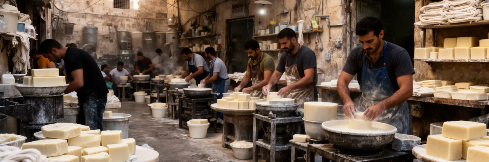
アレッポの産業は、古い市場と近代的な工業の両方に根を持ちます。繊維、衣料、食品加工、石けん、金属、木工、卸売は、家族経営の工房や中小企業、商人の信用で支えられてきました。アレッポ石けんのような商品は文化的な象徴でもありますが、その背後には原料、燃料、乾燥場所、職人の技術、流通経路、輸出先との関係があります。戦争は工場設備、倉庫、道路、電力、資本、労働力を奪い、多くの事業者が操業停止や移転を経験しました。復旧後も、機械の修理、原料調達、通貨の不安、購買力の低下、若者の雇用不足が課題になります。働く人の生活を見ると、賃金だけでなく、家族を支える送金、女性の在宅労働、子どもの教育中断、技能を持つ人の国外流出が都市経済を左右します。アレッポの強さは、巨大な本社機能ではなく、細かな製造と商売が地区ごとに連なり、互いに部品や信用を融通する密度にあります。工場が一つ戻っても、運送業者、修理工、包装材、銀行、買い手が戻らなければ仕事は続きません。若者が技能を学べる現場を失うことも、都市の将来を削ります。低い賃金で家計をつなぐ労働や、路上で小さな品を売る仕事も多く、復興の明るさだけでは仕事の質を判断できません。その密度を戻すには、建物より先に、電力、金融、輸送、教育、法的安定、働く人が住める家が必要です。産業復興は、都市の生活復興と同じ問題です。
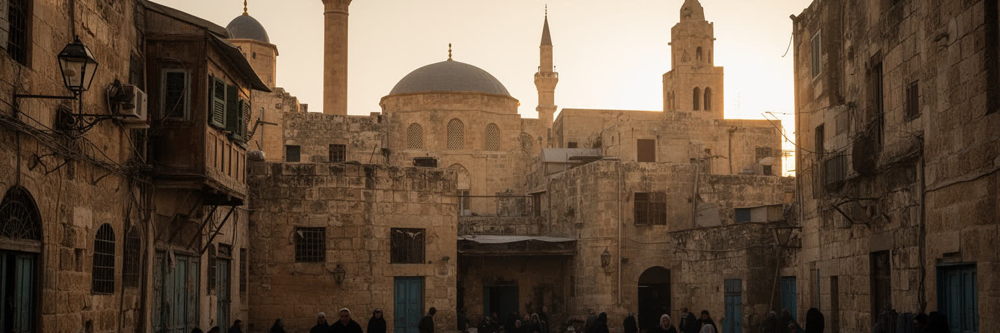
アレッポの宗教地図は、単純な多数派と少数派の図ではありません。モスク、教会、修道院、墓地、聖者廟、学校、慈善施設が地区ごとに置かれ、スンニ派の生活圏、アルメニア系や他のキリスト教共同体、クルド人やアラブ人の居住、商人のネットワークが重なります。宗教施設は礼拝の場所であると同時に、結婚、葬儀、教育、食事支援、避難、寄付、相談の拠点にもなります。戦争はこの地図を大きく揺らし、住民の移動、建物の損傷、相互不信、国外移住を生みました。それでも近所の関係は完全に消えたわけではなく、親族、商店、宗教団体、学校を通じて生活の支えが残ります。宗教を観光資源としてだけ見ると、こうした日常の役割を見落とします。アレッポの祈りは、古い石造建築の美しさだけでなく、食料を分ける手、葬儀を助ける近所、子どもの通学を見守る家族にも現れます。礼拝の時間、祝祭の食、断食月の夜、教会の鐘、墓地への道は、都市の暦を作ります。避難で離れた人も、こうした暦を通じて故郷とつながり続けます。礼拝所の修理は、建物の復旧であると同時に、共同体が再び集まる合図でもあります。多宗教都市の成熟は、違いを消すことではなく、違う記憶を持つ住民が同じ市場、道、学校、病院を使える条件を保つことにあります。信仰は都市の境界を分ける力にも、修復する力にもなります。
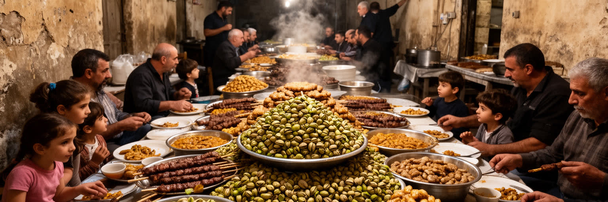
アレッポの文化は、城塞やスークの石造景観だけでなく、食、音楽、言葉、家族行事、職人の手仕事に宿ります。アレッポ料理は香辛料、ナッツ、ザクロ、肉、穀物、オリーブ油を組み合わせ、トルコ、レバント、メソポタミアの影響を受けながら独自の味を作ってきました。家庭料理、菓子、朝食、宴会料理は、商業都市として集まった食材と人の記憶を残します。音楽や詩、語りの伝統も、カフェ、結婚式、宗教行事、家庭の集まりで受け継がれてきました。戦争と避難はこの文化を国外へ散らし、移住先の台所やレストランでアレッポの味が再構成される一方、都市内部では材料不足や生活費の上昇が食卓を変えます。文化を保存するとは、名物を一覧にすることではありません。料理を作る時間、家族が集まる部屋、音楽を習う場所、職人が道具を保管する工房、祭礼へ行ける安全な道を守ることです。小さな菓子店、香辛料店、結婚式の演奏者、石けんを切る職人は、観光パンフレットより細かく都市の個性を伝えます。台所の節約や代用品の工夫も、危機の中で生まれる文化です。食卓は家族の安否を確かめる場でもあり、離散した親族の話が料理と一緒に残ります。アレッポの食と文化は、喪失を語るだけでなく、離散した人々が自分の都市を思い出し、残る人々が日常を続けるための手段でもあります。香りや味は、地図より強く帰属を呼び戻します。
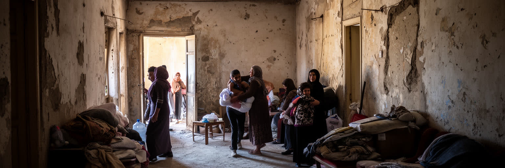
アレッポの住宅問題は、破壊された建物を修理するだけでは解けません。家を失った人、国外や国内の避難先にいる人、戻りたくても仕事や安全が足りない人、戻った後も所有権や家賃で困る人がいます。古い中庭住宅、集合住宅、郊外の新しい地区、非公式な住まいは、それぞれ違う被害と復旧の課題を抱えます。水道、電力、排水、学校、病院、商店が戻らなければ、壁を直しても生活は戻りません。家族構成も変わりました。死亡、移住、兵役、失業、結婚の延期、子どもの教育中断が住まいの意味を変え、女性や高齢者が家計と介護を担う場面も増えます。住宅復旧は、資材と資金の問題であると同時に、誰が帰還者として認められ、どの書類を持ち、どの地区に将来を描けるのかという権利の問題です。避難先で生まれた子どもにとって、アレッポは家族の記憶として先に存在します。帰還は地図上の移動ではなく、学校、仕事、近所、言葉、喪失の受け止め直しです。仮住まいが長くなるほど、故郷と現在の生活の間に新しい葛藤が生まれます。観光で旧市街の外観が整っても、住民が安心して眠り、料理し、勉強し、近所に助けを求められなければ、都市は回復したとは言えません。アレッポの家は、私的な空間でありながら、避難、記憶、所有、行政、復興政策が交わる最も具体的な日常生活の場所です。
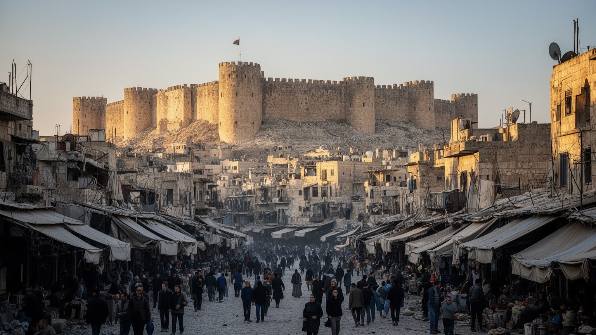
アレッポを世界の都市地図に置くと、単なる古都でも、戦争で傷ついた都市でもありません。交易路の結節点、城塞とスークの遺産、繊維と食品の工房、多宗教の地区、避難と帰還の経験、文化財修復と住宅再建の緊張が同じ場所で重なります。都市の価値を文化財だけで測ると、そこに住む人の収入、学校、電力、水、医療、心の傷が見えにくくなります。反対に被害だけで語ると、長い商業の知恵、料理、音楽、信仰、職人の誇り、近所の支援が消えてしまいます。アレッポの難しさは、遺産を守ることと生活を戻すことが同じ課題でありながら、しばしば違う速度で進む点にあります。外から訪れる人は城塞や旧市街の美しさに惹かれますが、その石の下には避難した家族、閉じた店、戻った職人、学び直す子ども、修理を待つ家があります。読むべきなのは、過去を飾る石と、現在を支える水道管や配線が同じ都市を作る事実です。アレッポは、遺産都市と生活都市を分けて考えることの限界を教えます。都市の未来は、記念物の保存と住民の尊厳を同じ文で語れるかにかかっています。アレッポを読むことは、過去の輝きへ戻る物語ではなく、壊れた都市がどのように日常を組み直すのかを追うことです。世界都市の重要性は経済規模だけでなく、人類の記憶、破壊、再建、共存をどれほど具体的に示すかにもあります。